External controller <<
Previous Next >> Line following
BubbleRob
由40723222提供
BubbleRob tutorial
This tutorial will try to introduce quite many CoppeliaSim functionalities while designing the simple mobile robot BubbleRob. The CoppeliaSim scene file related to this tutorial is located in CoppeliaSim's installation folder's tutorials/BubbleRob folder. Following figure illustrates the simulation scene that we will design:
本教程將設計簡單的移動機器人 BubbleRob 並嘗試介紹很多 CoppeliaSim 功能。 與本教程相關的 CoppeliaSim 場景文件位於 CoppeliaSim 的安裝文件夾的 tutorials / BubbleRob 文件夾中。下圖說明了我們將設計的仿真場景：
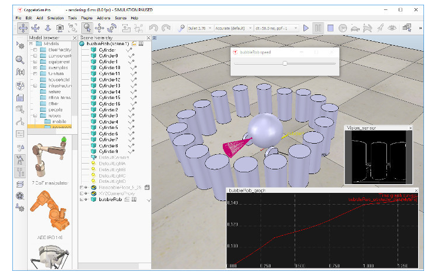
Since this tutorial will fly over many different aspects, make sure to also have a look at the other tutorials, mainly the tutorial about building a simulation model. First of all, freshly start CoppeliaSim. The simulator displays a default scene. We will start with the body of BubbleRob.
由於本教程將跨越許多不同的方面，因此請確保也看看其他教程，主要是有關構建仿真模型的教程。首先，重新啟動CoppeliaSim。模擬器顯示默認場景。我們將從BubbleRob的主體開始。
We add a primitive sphere of diameter 0.2 to the scene with [Menu bar --> Add --> Primitive shape --> Sphere]. We adjust the X-size item to 0.2, then click OK. The created sphere will appear in the visibility layer 1 by default, and be dynamic and respondable (since we kept the item Create dynamic and respondable shape enabled). This means that BubbleRob's body will be falling and able to react to collisions with other respondable shapes (i.e. simulated by the physics engine). We can see this is the shape dynamics properties: items Body is respondable and Body is dynamic are enabled. We start the simulation (via the toolbar button, or by pressing <control-space> in the scene window), and copy-and-paste the created sphere (with [Menu bar --> Edit --> Copy selected objects] then [Menu bar --> Edit -> Paste buffer], or with <control-c> then <control-v>): the two spheres will react to collision and roll away. We stop the simulation: the duplicated sphere will automatically be removed. This default behaviour can be modified in the simulation dialog.
我們使用[Menu bar --> Add --> Primitive shape --> Sphere]將直徑為0.2的基本球體添加到場景中。我們將X尺寸項目調整為0.2，然後單擊“確定”。默認情況下，創建的球體將顯示在可見性層1中，並且因該是動態且可響應的（因為我們已啟用“Create dynamic and responsive shapes”）。這意味著BubbleRob的身體會掉落並且能夠對與其他可響應形狀的碰撞做出反應（即由物理引擎模擬）。我們可以看到這是“Shape dynamics”屬性：啟用了“The body can respond”和“Body is dynamic”項目。我們開始模擬（通過工具欄按鈕，或在場景窗口中按<control-space>），然後復制並貼上創建的球體（使用[Menu bar --> Edit --> Copy selected objects]，然後[Menu bar --> Edit -> Paste buffer]，或者先按<control-c>，再按<control-v>）：這兩個球將對碰撞做出反應並滾動。我們停止模擬：重複的球體將自動刪除。可以在模擬對話框中修改此默認行為。
We also want the BubbleRob's body to by usable by the other calculation modules (e.g. the minimum distance calculation module). For that reason, we enable Collidable, Measurable, Renderable and Detectable in the object common properties for that shape, if not already enabled. If we wanted, we could now also change the visual appearance of our sphere in the shape properties.
我們還希望BubbleRob的主體可以被其他計算模塊（例如最小距離計算模塊）使用。因此，如果尚未啟用，則在該形狀的對象公共屬性中啟用“Collidable”，“Measurable”，“Renderable”和“Detectable”。如果需要，我們現在還可以在形狀屬性中更改球體的視覺外觀。
Now we open the position dialog on the translation tab, select the sphere representing BubbleRob's body, and enter 0.02 for Along Z. We make sure that the Relative to-item is set to World. Then we click Translate selection. This translates all selected objects by 2 cm along the absolute Z-axis, and effectively lifted our sphere a little bit. In the scene hierarchy, we double-click the sphere's name, so that we can edit its name. We enter bubbleRob and press enter.
現在，我們在“平移translation”選項上打開“位置position”對話框，選擇表示BubbleRob身體的球體，並為“沿Z”輸入0.02。確保將“相對於”項設置為“世界World”。然後我們點擊Translate選擇。這會將所有選定對象沿絕對Z軸平移2 cm，並有效地將我們的球體抬高了一點。在場景層次結構中，我們雙擊球體的名稱，以便我們可以編輯其名稱。我們輸入bubbleRob，然後按Enter。
Next we will add a proximity sensor so that BubbleRob knows when it is approaching obstacles: we select [Menu bar --> Add --> Proximity sensor --> Cone type]. In the orientation dialog on the orientation tab, we enter 90 for Around Y and for Around Z, then click Rotate selection. In the position dialog, on the position tab, we enter 0.1 for X-coord. and 0.12 for Z-coord. The proximity sensor is now correctly positioned relative to BubbleRob's body. We double-click the proximity sensor's icon in the scene hierarchy to open its properties dialog. We click Show volume parameter to open the proximity sensor volume dialog. We adjust items Offset to 0.005, Angle to 30 and Range to 0.15. Then, in the proximity sensor properties, we click Show detection parameters. This opens the proximity sensor detection parameter dialog. We uncheck item Don't allow detections if distance smaller than then close that dialog again. In the scene hierarchy, we double-click the proximity sensor's name, so that we can edit its name. We enter bubbleRob_sensingNose and press enter.
接下來，我們將添加一個距離傳感器，以便BubbleRob知道它何時接近障礙物：我們選擇[Menu bar --> Add --> Proximity sensor --> Cone type]。在“方向orientation”選項上的“方向orientation”對話框中，我們為“周圍的Y”和“周圍的Z”輸入90，然後單擊“旋轉選擇Rotate selection”。在位置對話框的“位置position”選項上，為X坐標輸入0.1。 Z坐標為0.12。現在，接近傳感器已相對於BubbleRob的身體正確定位。我們在場景層次中雙擊接近傳感器的圖標以打開其屬性對話框。我們單擊顯示體積參數以打開接近傳感器體積對話框。我們將偏移量調整為0.005，角度調整為30，範圍調整為0.15。然後，在距離傳感器屬性中，單擊“顯示檢測參數Show detection parameters”。這將打開距離傳感器去檢測參數對話框。如果距離小於則取消選中“不允許檢測Don't allow detections”項，然後再次關閉該對話框。在場景層次結構中，我們雙擊距離傳感器的名稱，以便我們可以編輯其名稱。我們輸入bubbleRob_sensingNose並enter。
We select bubbleRob_sensingNose, then control-select bubbleRob, then click [Menu bar --> Edit --> Make last selected object parent]. This attaches the sensor to the body of the robot. We could also have dragged bubbleRob_sensingNose onto bubbleRob in the scene hierarchy. This is what we now have:
我們選擇bubbleRob_sensingNose，然後按住Control鍵選擇bubbleRob，然後單擊[Menu bar --> Edit -->將上一個選定的對象設為parent]。這會將傳感器連接到機器人的身體。我們還可以將bubbleRob_sensingNose拖動到場景層次中的bubbleRob上。這就是我們現在擁有的：
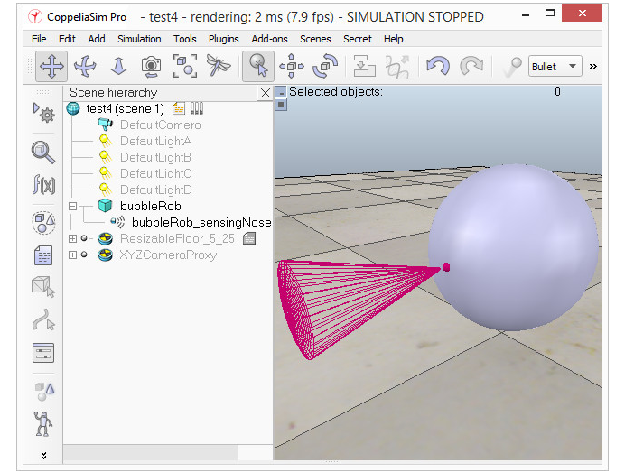
[Proximity sensor attached to bubbleRob's body]
Next we will take care of BubbleRob's wheels. We create a new scene with [Menu bar --> File --> New scene]. It is often very convenient to work across several scenes, in order to visualize and work only on specific elements. We add a pure primitive cylinder with dimensions (0.08,0.08,0.02). As for the body of BubbleRob, we enable Collidable, Measurable, Renderable and Detectable in the object common properties for that cylinder, if not already enabled. Then we set the cylinder's absolute position to (0.05,0.1,0.04) and its absolute orientation to (-90,0,0). We change the name to bubbleRob_leftWheel. We copy and paste the wheel, and set the absolute Y coordinate of the copy to -0.1. We rename the copy to bubbleRob_rightWheel. We select the two wheels, copy them, then switch back to scene 1, then paste the wheels.
接下來，我們將設定BubbleRob的車輪。我們使用[Menu bar --> File --> New scene]創建一個新場景。跨多個場景工作通常非常方便，以便可視化並僅對特定元素進行工作。我們添加一個尺寸為（0.08,0.08,0.02）的圓柱體。對於BubbleRob的主體，如果尚未啟用，則在該圓柱的對象通用屬性中啟用Collidable，Measurable，Renderable和Detectable。然後，將圓柱的絕對位置設置為（0.05,0.1,0.04），並將其絕對方向設置為（-90,0,0）。我們將名稱更改為bubbleRob_leftWheel。我們複製並粘貼滾輪，然後將復制的絕對Y坐標設置為-0.1。我們將物件名稱重新命名為bubbleRob_rightWheel。我們選擇兩個輪子，複製它們，然後切換回場景1，然後貼上輪子。
We now need to add joints (or motors) for the wheels. We click [Menu bar --> Add --> Joint --> Revolute] to add a revolute joint to the scene. Most of the time, when adding a new object to the scene, the object will appear at the origin of the world. We Keep the joint selected, then control-select bubbleRob_leftWheel. In the position dialog, on the position tab, we click the Apply to selection button: this positioned the joint at the center of the left wheel. Then, in the orientation dialog, on the orientation tab, we do the same: this oriented the joint in the same way as the left wheel. We rename the joint to bubbleRob_leftMotor. We now double-click the joint's icon in the scene hierarchy to open the joint properties dialog. Then we click Show dynamic parameters to open the joint dynamics properties dialog. We enable the motor, and check item Lock motor when target velocity is zero. We now repeat the same procedure for the right motor and rename it to bubbleRob_rightMotor. Now we attach the left wheel to the left motor, the right wheel to the right motor, then attach the two motors to bubbleRob. This is what we have:
現在，我們需要為車輪添加動力（或電動機）。我們單擊[Menu bar --> Add --> Joint --> Revolute]將旋轉關節添加到場景。在大多數情況下，將新對象添加到場景時，該對象將出現在世界的起始處。我們保持動力件處於選中狀態，然後控制選擇bubbleRob_leftWheel。在位置對話框的“位置position”選項上，我們單擊“Apply”選擇按鈕：這將動力定位在左輪的中心。然後，在“方向”對話框中的“方向”選項卡上，執行相同的操作：這將關節與左輪定向的方向相同。我們將關節重命名為bubbleRob_leftMotor。現在，我們在場景層次中雙擊關節的圖標以打開關節屬性對話框。然後，單擊“顯示動態參數”以打開關節動力學屬性對話框。我們啟用電動機，然後選中目標速度為零時鎖定電動機。現在，我們對右馬達重複相同的過程，並將其重命名為bubbleRob_rightMotor。現在，我們將左輪連接到左馬達，將右輪連接到右馬達，然後將兩個馬達連接到bubbleRob。這就是我們所擁有的：
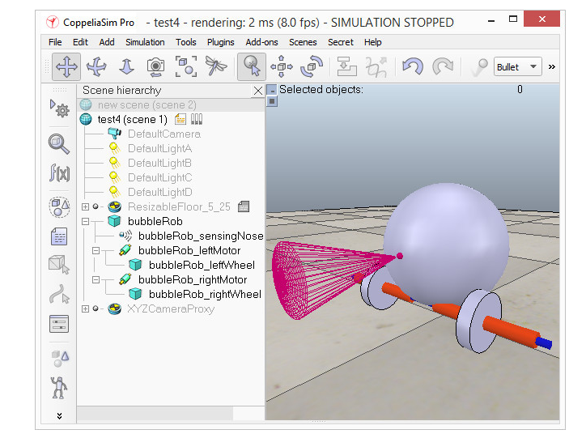
[Proximity sensor, motors and wheels]
We run the simulation and notice that the robot is falling backwards. We are still missing a third contact point to the floor. We now add a small slider (or caster). In a new scene we and add a pure primitive sphere with diameter 0.05 and make the sphere Collidable, Measurable, Renderable and Detectable (if not already enabled), then rename it to bubbleRob_slider. We set the Material to noFrictionMaterial in the shape dynamics properties. To rigidly link the slider with the rest of the robot, we add a force sensor object with [Menu bar --> Add --> Force sensor]. We rename it to bubbleRob_connection and shift it up by 0.05. We attach the slider to the force sensor, then copy both objects, switch back to scene 1 and paste them. We then shift the force sensor by -0.07 along the absolute X-axis, then attach it to the robot body. If we run the simulation now, we can notice that the slider is slightly moving in relation to the robot body: this is because both objects (i.e. bubbleRob_slider and bubbleRob) are colliding with each other. To avoid strange effects during dynamics simulation, we have to inform CoppeliaSim that both objects do not mutually collide, and we do this in following way: in the shape dynamics properties, for bubbleRob_slider we set the local respondable mask to 00001111, and for bubbleRob, we set the local respondable mask to 11110000. If we run the simulation again, we can notice that both objects do not interfere anymore. This is what we now have:
我們運行模擬，並注意到機器人向後倒下。我們仍然缺少與地板的第三個接觸點。現在，我們添加一個小的滑塊（或腳輪）。在一個新場景中，我們添加一個直徑為0.05的球體，並使該球體可碰撞，可測量，可渲染和可檢測（如果尚未啟用），然後將其重命名為bubbleRob_slider。我們在形狀動力學屬性中將Material設置為noFrictionMaterial。為了將滑塊與機器人的其餘部分牢固地鏈接在一起，我們使用[菜單欄->添加->力傳感器]添加了力傳感器對象。我們將其重命名為bubbleRob_connection並將其上移0.05。我們將滑塊連接到力傳感器，然後復制兩個對象，切換回場景1並貼上它們。然後，我們將力傳感器沿絕對X軸移動-0.07，然後將其安裝到機器人主體上。如果現在運行仿真，我們會注意到滑塊相對於機器人主體略微移動：這是因為兩個對象（即bubbleRob_slider和bubbleRob）彼此碰撞。為了避免在動力學模擬過程中產生奇怪的影響，我們必須通知CoppeliaSim兩個對像不會相互碰撞，我們可以通過以下方式進行此操作：在形狀動力學屬性中，對於bubbleRob_slider，我們將本地可響應模版設置為00001111，對於bubbleRob，我們將本地可響應掩碼設置為11110000。如果再次運行機器人，我們會注意到兩個對像不再相互干擾。這就是我們現在擁有的：
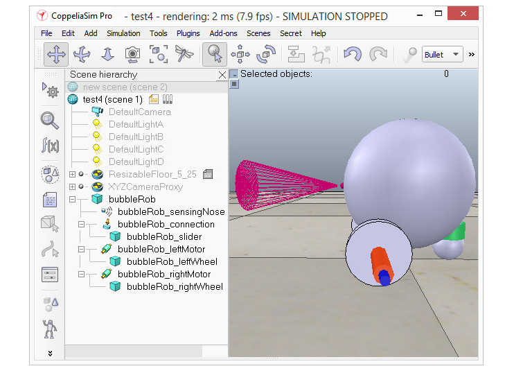
[Proximity sensor, motors, wheels and slider]
We run the simulation again and notice that BubbleRob slightly moves, even with locked motor. We also try to run the simulation with different physics engines: the result will be different. Stability of dynamic simulations is tightly linked to masses and inertias of the involved non-static shapes. For an explanation of this effect, make sure to carefully read this and that sections. We now try to correct for that undesired effect. We select the two wheels and the slider, and in the shape dynamics dialog we click three times M=M*2 (for selection). The effect is that all selected shapes will have their masses multiplied by 8. We do the same with the inertias of the 3 selected shapes, then run the simulation again: stability has improved. In the joint dynamics dialog, we set the Target velocity to 50 for both motors. We run the simulation: BubbleRob now moves forward and eventually falls off the floor. We reset the Target velocity item to zero for both motors.
我們再次運行機器人，發現即使在電機鎖定的情況下，BubbleRob也會輕微移動。我們還嘗試使用不同的物理引擎運行機器人：結果將有所不同。動態仿真的穩定性與所涉及的非靜態形狀的質量和慣性緊密相關。有關此效果的說明，請務必仔細閱讀本節和該節。現在，我們嘗試糾正這種不良影響。我們選擇兩個輪子和滑塊，然後在“動力學”對話框中單擊3次M = M * 2（用於選擇）。效果是所有選定形狀的質量都將乘以8。我們對3個選定形狀的慣性進行相同的操作，然後再次運行仿真：穩定性得到了改善。在關節動力學對話框中，我們將兩個電機的目標速度都設置為50。我們運行模擬：BubbleRob現在向前移動並最終掉落在地板上。我們將兩個電機的目標速度項都重置為零。
The object bubbleRob is at the base of all objects that will later form the BubbleRob model. We will define the model a little bit later. In the mean time, we want to define a collection of objects that represent BubbleRob. For that we define a collection object. We click [Menu bar --> Tools --> Collections] to open the collection dialog. Alternatively we can also open the dialog by clicking the appropriate toolbar button:
對象bubbleRob是所有對象的基礎，所有對象隨後將形成BubbleRob模型。我們將在稍後定義模型。同時，我們要定義代表BubbleRob的對象的集合。為此，我們定義了一個收集對象。我們單擊[Menu bar --> Tools --> Collections]以打開集合對話框。或者，我們也可以通過單擊相應的工具欄按鈕來打開對話框：
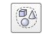
In the collection dialog, we click Add new collection. A new collection object appears in the list just below. For now the newly added collection is still empty (not defined). While the new collection item is selected in the list, select bubbleRob in the scene hierarchy, and then click Add in the collection dialog. Our collection is now defined as containing all objects of the hierarchy tree starting at the bubbleRob object (the collection's composition is displayed in the Composing elements and attributes section). To edit the collection name, we double-click it, and rename it to bubbleRob_collection. We close the collection dialog.
在集合對話框中，單擊添加新集合。一個新的集合對像出現在下面的列表中。目前，新添加的集合仍為空（未定義）。在列表中選擇新的收藏項時，在場景層次中選擇bubbleRob，然後在收藏對話框中單擊“添加”。現在，我們的集合被定義為包含層次結構樹的所有對象（從bubbleRob對像開始）（集合的組成顯示在“組成元素和屬性”部分中）。要編輯集合名稱，請雙擊它，然後將其重命名為bubbleRob_collection。我們關閉收集對話框。
At this stage we want to be able to track the minimum distance between BubbleRob and any other object. For that, we open the distance dialog with [Menu bar --> Tools --> Calculation module properties]. Alternatively we can also open the calculation module properties dialog with the appropriate toolbar button:
在此階段，我們希望能夠跟踪BubbleRob與任何其他對象之間的最小距離。為此，我們使用[Menu bar --> Tools --> Calculation module properties]打開距離對話框。或者，我們也可以使用相應的工具欄按鈕打開計算模塊屬性對話框：
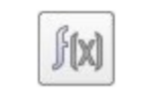
In the distance dialog, we click Add new distance object and select a distance pair: [collection] bubbleRob_collection - all other measurable objects in the scene. This just added a distance object that will measure the smallest distance between collection bubbleRob_collection (i.e. any measurable object in that collection) and any other measurable object in the scene. We rename the distance object to bubbleRob_distance with a double-click in its name. We close the distance dialog. When we now run the simulation, we won't see any difference, since the distance object will try to measure (and display) the smallest distance segment between BubbleRob and any other measurable object in the scene. The problem is that at this stage there is no other measurable object in the scene (the shape defining the floor has its measurable property turned off by default). At a later stage in this tutorial, we will add obstacles to our scene.
在距離對話框中，單擊“添加新距離對象”並選擇一個距離對：[collection] bubbleRob_collection-場景中所有其他可測量對象。這只是添加了一個距離對象，該距離對象將測量集合bubbleRob_collection（即該集合中的任何可測量對象）與場景中任何其他可測量對象之間的最小距離。我們通過雙擊其名稱將距離對象重命名為bubbleRob_distance。我們關閉距離對話框。現在，當我們運行模擬時，我們不會看到任何區別，因為距離對象將嘗試測量（並顯示）BubbleRob與場景中任何其他可測量對象之間的最小距離段。問題在於，在此階段，場景中沒有其他可測量的對象（定義地板的形狀默認情況下已禁用其可測量的屬性）。在本教程的後續階段，我們將為場景添加障礙。
Next we are going to add a graph object to BubbleRob in order to display above smallest distance, but also BubbleRob's trajectory over time. We click [Menu bar --> Add --> Graph] and rename it to bubbleRob_graph. We attach the graph to bubbleRob, and set the graph's absolute coordinates to (0,0,0.005). Now we open the graph properties dialog by double-clicking its icon in the scene hierarchy. We uncheck Display XYZ-planes, then click Add new data stream to record and select Object: absolute x-position for the Data stream type, and bubbleRob_graph for the Object / item to record. An item has appeared in the Data stream recording list. That item is a data stream of bubbleRob_graph's absolute x-coordinate (i.e. the bubbleRobGraph's object absolute x position will be recorded). Now we also want to record the y and z positions: we add those data streams in a similar way as above. We now have 3 data streams that represent BubbleRob's x-, y- and z-trajectories. We are going to add one more data stream so that we are able to track the minimum distance between our robot and its environment: we click Add new data stream to record and select Distance: segment length for the Data stream type, and bubbleRob_distance for the Object / item to record. In the Data stream recording list, we now rename Data to bubbleRob_x_pos, Data0 to bubbleRob_y_pos, Data1 to bubbleRob_z_pos, and Data2 to bubbleRob_obstacle_dist.
接下來，我們將向BubbleRob添加一個圖形對象，以顯示最小距離以上的距離，同時還顯示BubbleRob隨時間的軌跡。我們單擊[Menu bar --> Add --> Graph]，並將其重命名為bubbleRob_graph。我們將圖形附加到bubbleRob，並將圖形的絕對坐標設置為（0,0,0.005）。現在，通過在場景層次結構中雙擊其圖標來打開圖形屬性對話框。我們取消選中“顯示XYZ平面”，然後單擊“添加新數據流以進行記錄”，然後選擇“對象：數據流類型的絕對x位置”，並選擇“ bubbleRob_graph”作為要記錄的對象/項目。數據流記錄列表中出現了一個項目。該項目是bubbleRob_graph的絕對x坐標的數據流（即，將記錄bubbleRobGraph的對象的絕對x位置）。現在，我們還想記錄y和z位置：我們以與上述類似的方式添加這些數據。現在，我們有3個數據，分別表示BubbleRob的x，y和z軌跡。我們將再添加一個數據流，以便能夠跟踪機器人與其環境之間的最小距離：單擊添加新數據流以進行記錄，然後選擇“距離：數據流類型的段長度”和“氣泡Rob_distance”作為要記錄的對象/項目。在數據流記錄列表中，我們現在將Data重命名為bubbleRob_x_pos，將Data0重命名為bubbleRob_y_pos，將Data1重命名為bubbleRob_z_pos，將Data2重命名為bubbleRob_obstacle_dist。
We select bubbleRob_x_pos in the Data Stream recording list and in the Time graph properties section, uncheck Visible. We do the same for bubbleRob_y_pos and bubbleRob_z_pos. By doing so, only the bubbleRob_obstacle_dist data stream will be visible in a time graph. Following is what we should have:
我們在“數據流”記錄列表中和“時間圖屬性”部分中選擇bubbleRob_x_pos，取消選中“可見”。我們對bubbleRob_y_pos和bubbleRob_z_pos都執行相同的操作。這樣，在時間圖中只能看到bubbleRob_obstacle_dist數據流。以下是我們應該擁有的：
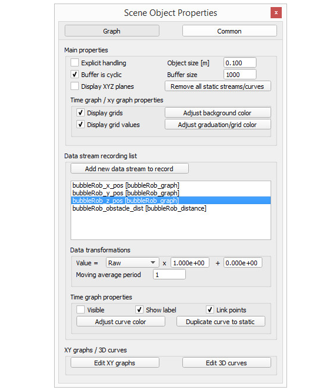
[Graph properties]
Next we will set-up a 3D curve that displays BubbleRob's trajectory: we click Edit 3D curves to open the XY graph and 3D curve dialog, then click Add new curve. In the dialog that pops open, we select bubbleRob_x_pos for the X-value item, bubbleRob_y_pos for the Y-value item and bubbleRob_z_pos for the Z-value item. We rename the newly added curve from Curve to bubbleRob_path. Finally, we check the Relative to world item and set Curve width to 4:
接下來，我們將建立一個顯示BubbleRob軌蹟的3D曲線：單擊“編輯3D曲線”以打開XY圖形和3D曲線對話框，然後單擊“添加新曲線”。在彈出的對話框中，我們為X值項目選擇bubbleRob_x_pos，為Y值項目選擇bubbleRob_y_pos，為Z值項目選擇bubbleRob_z_pos。我們將新添加的曲線從Curve重命名為bubbleRob_path。最後，我們檢查“相對於世界”項目並將“曲線寬度”設置為4：
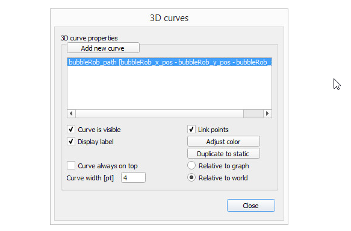
[3D curve properties]
We close all dialogs related to graphs. Now we set one motor target velocity to 50, run the simulation, and will see BubbleRob's trajectory displayed in the scene. We then stop the simulation and reset the motor target velocity to zero.
我們關閉與圖有關的所有對話框。現在我們將一個電機目標速度設置為50，運行模擬，然後將看到BubbleRob的軌跡顯示在場景中。然後，我們停止仿真並將電動機目標速度重置為零。
We add a pure primitive cylinder with following dimensions: (0.1, 0.1, 0.2). We want this cylinder to be static (i.e. not influenced by gravity or collisions) but still exerting some collision responses on non-static respondable shapes. For this, we disable Body is dynamic in the shape dynamics properties. We also want our cylinder to be Collidable, Measurable, Renderable and Detectable. We do this in the object common properties. Now, while the cylinder is still selected, we click the object translation toolbar button:
我們添加具有以下尺寸的純原始圓柱體：（0.1，0.1，0.2）。我們希望此圓柱體是靜態的（即不受重力或碰撞的影響），但仍會對非靜態的可響應形狀施加一些碰撞響應。為此，我們在形狀動力學屬性中禁用“主體是動態的”。我們還希望圓柱體是可碰撞的，可測量的，可渲染的和可檢測的。我們在對象的公共屬性中執行此操作。現在，在仍選擇圓柱體的情況下，我們單擊對象平移工具欄按鈕：
Now we can drag any point in the scene: the cylinder will follow the movement while always being constrained to keep the same Z-coordinate. We copy and paste the cylinder a few times, and move them to positions around BubbleRob (it is most convenient to perform that while looking at the scene from the top). During object shifting, holding down the shift key allows to perform smaller shift steps. Holding down the ctrl key allows to move in an orthogonal direction to the regular direction(s). When done, select the camera pan toolbar button again:
現在我們可以拖動場景中的任何點：圓柱體將跟隨運動，同時始終受約束以保持相同的Z坐標。我們複製並粘貼圓柱幾次，然後將它們移動到BubbleRob周圍的位置（從頂部查看場景時執行該操作最方便）。在對象移動期間，按住Shift鍵可以執行較小的移動步驟。按住ctrl鍵可以在與常規方向正交的方向上移動。完成後，再次選擇相機平移工具欄按鈕：
![]()
We set a target velocity of 50 for the left motor and run the simulation: the graph view now displays the distance to the closest obstacle and the distance segment is visible in the scene too. We stop the simulation and reset the target velocity to zero.
我們將左馬達的目標速度設置為50並運行模擬：現在，圖形視圖顯示了到最近障礙物的距離，並且該距離段在場景中也可見。我們停止模擬並將目標速度重置為零。
We now need to finish BubbleRob as a model definition. We select the model base (i.e. object bubbleRob) then check items Object is model base and Object/model can transfer or accept DNA in the object common properties: there is now a stippled bounding box that encompasses all objects in the model hierarchy. We select the two joints, the proximity sensor and the graph, then enable item Don't show as inside model selection and click Apply to selection, in the same dialog: the model bounding box now ignores the two joints and the proximity sensor. Still in the same dialog, we disable camera visibility layer 2, and enable camera visibility layer 10 for the two joints and the force sensor: this effectively hides the two joints and the force sensor, since layers 9-16 are disabled by default. At any time we can modify the visibility layers for the whole scene. To finish the model definition, we select the vision sensor, the two wheels, the slider, and the graph, then enable item Select base of model instead: if we now try to select an object in our model in the scene, the whole model will be selected instead, which is a convenient way to handle and manipulate the whole model as a single object. Additionally, this protects the model against inadvertant modification. Individual objects in the model can still be selected in the scene by click-selecting them with control-shift, or normally selecting them in the scene hierarchy. We finally collapse the model tree in the scene hierarchy. This is what we have:
現在，我們需要完成BubbleRob作為模型定義。我們選擇模型基礎（即對象bubbleRob），然後選中``對像是模型基礎''，然後選擇``對象/模型可以轉移或接受對象共同屬性中的DNA''：現在有一個點畫的邊界框包含模型層次結構中的所有對象。我們選擇兩個關節，即接近傳感器和圖形，然後啟用項目“不顯示為內部模型選擇”，然後在同一對話框中單擊“應用於選擇”：模型邊界框現在將忽略兩個關節和接近傳感器。仍在同一對話框中，我們禁用攝像機可見性層2，並為兩個關節和力傳感器啟用攝像機可見性層10：這有效地隱藏了兩個關節和力傳感器，因為默認情況下禁用第9-16層。我們可以隨時修改整個場景的可見性層。要完成模型定義，我們選擇視覺傳感器，兩個輪子，滑塊和圖形，然後啟用“選擇模型基礎”選項：如果現在嘗試在場景中選擇模型中的對象，則整個模型而是選擇，這是一種將單個模型處理和操縱整個模型的便捷方法。此外，這可以防止模型受到意外修改。仍然可以通過在按住Shift的同時單擊選擇對像或在場景層次結構中正常選擇它們，來在場景中選擇模型中的單個對象。最後，我們將模型樹折疊到場景層次中。這就是我們所擁有的：
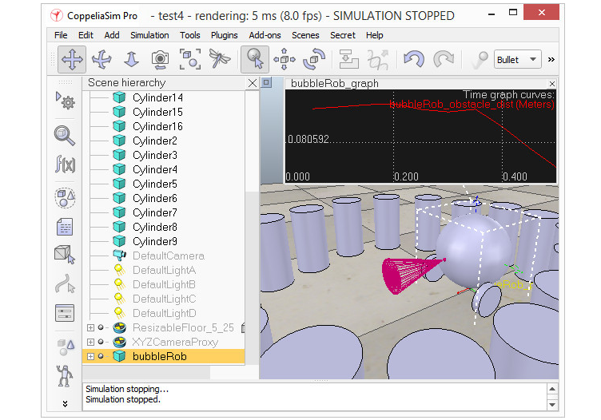
[BubbleRob model definition]
Next we will add a vision sensor, at the same position and orientation as BubbleRob's proximity sensor. We open the model hierarchy again, then click [Menu bar --> Add --> Vision sensor --> Perspective type], then attach the vision sensor to the proximity sensor, and set the local position and orientation of the vision sensor to (0,0,0). We also make sure the vision sensor is not not visible, not part of the model bounding box, and that if clicked, the model will be selected instead. In order to customize the vision sensor, we open its properties dialog. We set the Far clipping plane item to 1, and the Resolution x and Resolution y items to 256 and 256. We add a floating view to the scene, and over the newly added floating view, right-click [Popup menu --> View --> Associate view with selected vision sensor] (we make sure the vision sensor is selected during that process).
接下來，我們將在與BubbleRob接近傳感器相同的位置和方向上添加視覺傳感器。我們再次打開模型層次結構，然後單擊[Menu bar --> Add --> Vision sensor --> Perspective type]，然後將視覺傳感器連接到接近傳感器，並將視覺傳感器的本地位置和方向設置為（0,0,0）。我們還確保視覺傳感器不可見，不是模型邊界框的一部分，並且如果單擊該模型，則會選擇模型。為了自定義視覺傳感器，我們打開其屬性對話框。將“遠裁剪平面”項設置為1，將“分辨率x”和“分辨率y”項設置為256和256。向場景中添加一個浮動視圖，並在新添加的浮動視圖上，右鍵單擊[Popup menu --> View --> Associate view with selected vision sensor]（我們確保在該過程中選擇了視覺傳感器）。
We attach a non-threaded child script to the vision sensor by clicking [Menu bar --> Add --> Associated child script --> Non threaded]. We double-click the little icon that appeared next to the vision sensor in the scene hierarchy: this opens the child script that we just added. We copy and paste following code into the script editor, then close it:
通過單擊[Menu bar --> Add --> Associated child script --> Non threaded]，將非線程子腳本附加到視覺傳感器。我們雙擊場景層次結構中視覺傳感器旁邊出現的小圖標：這將打開我們剛剛添加的子腳本。我們將以下代碼複製並粘貼到腳本編輯器中，然後將其關閉：
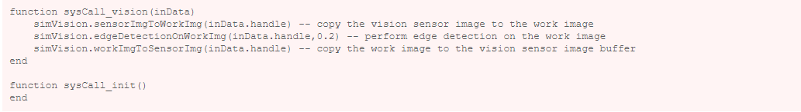
To be able to see the vision sensor's image, we start the simulation, then stop it again.
為了能夠看到視覺傳感器的圖像，我們開始模擬，然後再次停止。
The last thing that we need for our scene is a small child script that will control BubbleRob's behavior. We select bubbleRob and click [Menu bar --> Add --> Associated child script --> Non threaded]. We double-click the script icon that appeared next to bubbleRob's name in the scene hierarchy and copy and paste following code into the script editor, then close it:
我們場景所需的最後一件事是一個小的子腳本，它將控制BubbleRob的行為。我們選擇bubbleRob並單擊[Menu bar --> Add --> Associated child script --> Non threaded]。我們雙擊場景層次結構中bubbleRob名稱旁邊顯示的腳本圖標，然後將以下代碼複製並粘貼到腳本編輯器中，然後將其關閉：
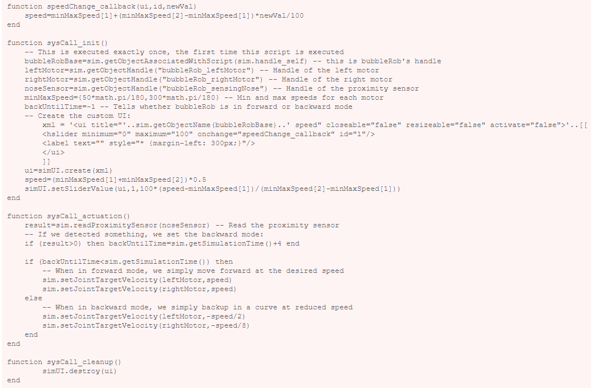
We run the simulation. BubbleRob now moves forward while trying to avoid obstacles (in a very basic fashion). While the simulation is still running, change BubbleRob's velocity, and copy/paste it a few times. Also try to scale a few of them while the simulation is still running. Be aware that the minimum distance calculation functionality might be heavily slowing down the simulation, depending on the environment. You can turn that functionality on and off in the distance dialog, by checking / unchecking the Enable all distance calculations item.
我們運行模擬。 BubbleRob現在在嘗試避開障礙物的同時向前移動（以非常基本的方式）。在模擬仍在運行時，更改BubbleRob的速度，然後將其複制/粘貼幾次。在模擬仍在運行時，也嘗試擴展其中的一些。請注意，根據環境的不同，最小距離計算功能可能會嚴重降低仿真速度。您可以通過選中/取消選中“啟用所有距離計算”項來在“距離”對話框中打開和關閉該功能。
Using a script to control a robot or model is only one way of doing. CoppeliaSim offers many different ways (also combined), have a look at the external controller tutorial.
使用腳本控制機器人或模型只是一種方法。 CoppeliaSim提供了許多不同的方法（也可以結合使用），請參閱外部控制器教程。
External controller <<
Previous Next >> Line following